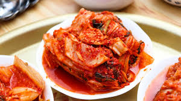

Cooking With Fermented Foods!
By Luke Weston, 10/11/2020
Fermented foods are a fun way to add a kick to new dishes, or your favorite foods that
you already cook! There are a number of kinds of fermented foods, varying from pickles
and hot sauces, to more complicated flavors like kimchi and fish sauce. To start using
fermented foods, you should first figure out what flavor you are trying to add. If you
want to add some heat, fermented peppers or kimchi may be a good choice. These flavors
take well to being flavorants in sauce, mixed in with salads, or added on top for
additional crunch and texture. A good way to get an understanding of a fermented food,
is to see how it is used in its original culture. Kimchi, for example, is often used as
a topping for rice dishes, a flavorant in soups, filling for dumplings, and braised meals.
You might have even used a number of fermented foods without knowing! Some common examples
including pickles, beer, sauerkraut, hot sauce, and yogurt. Not all of these may have
been fermented however. The tell is a sharp bite that lasts for a few seconds. Fermented
foods also have great health value and help to keep your digestive system moving. Try more
fermented foods!

| Food |
Profile |
| Kimchi |
Spicy, Sharp |
| Pickles |
Acidic, Salty |
| Miso |
Nutty, Savory |
Mastering the Guitar With Intervals
By Luke Weston, 10/11/2020
Many aspiring musicians have started playing the guitar over quarantine. Most make tremendous
strides in the first few months, but eventually find themselves slowing down. What is the
solution to this? Well, like all instruments, practice, but more specifically, practicing the
intervals on guitar. What are intervals? Intervals are the distance between notes, and they have
a signature sound. Intervals are independent of key: A major 2nd interval, will sound the same in
A or B or C or whatever key you are in. Most guitarists start to learn scales and chords, without
learning the individual intervals that make them up. A major chord, for example, is composed of a
root note, major 3rd, and perfect 5th interval. This is the recipe for any major triad. This has
been pretty boring so far, but let's talk about the implications. One of the most important aspects
of intervals, is getting your ear to understand them. Most people associate a certain interval with
a certain song. For example, the minor 2nd interval sounds like the Jaw's theme song, or the perfect
5th interval sounds like a super hero saving the day. When you internalize these intervals, you can
start to learn songs and recognize more exotic keys by ear. You will also be able to play what you
hear in your head, rather than just repeating patterns you learned off the internet. There are many
apps which can get you familiar with intervals on the app store. I would recommend Tenuto. More
importantly, any musician should practice learning songs by ear and transposing them into different
keys. Within a few months, you'll be playing complicated melodies, learning songs quickly by ear,
and improvising to complicated music like you never knew you could!